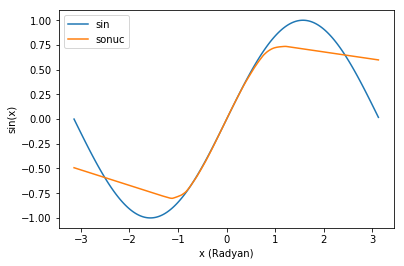
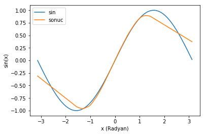
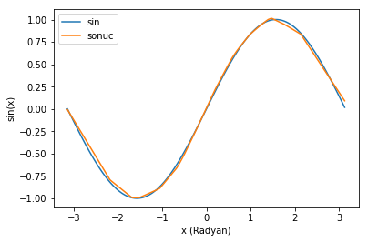

101 - İlk yapay sinir ağımız, Dense layer
Bu yazıdaki tüm kodları jupyter notebook formatında, Suni Dimağ github repository‘sinden çekebilirsiniz.
Bu örnekte ilk yapay sinir ağımızı gürültülü veri ile sinüs fonksiyonunu taklit etmek üzere eğiteceğiz.
|
|
Training set (Öğrenme kümesi)’nin oluşturulması
İlk olarak ağımızı eğitmek için kullanacağımız training set’i oluşturuyoruz. Ağın sinüs fonksiyonunu öğrenmesini istiyoruz, bu yüzden X radyan olarak rastgele açı değerleri, y ilgili açının sinüsü olacak şekilde 600 tane örnek oluşturuyoruz.
Gerçek dünyada gürültü içermeyen çok az veri vardır. Yapay sinir ağlarının gürültülü veriyle bile genelleme yapabilme gücünü gösterebilmek için y değerlerini rastgele bir miktar kaydırıyorum. Gürültünün miktarıyla noiserate değişkenini değiştirerek oynayabilirsiniz.
|
|

Modelin oluşturulması
Modelimiz iki katmandan oluşuyor. İlk katmanda 80 adet nöron var ve bunların her birinin girişi verimizin girdisine (X), yani açı değişkenine bağlı. Ayrıca bu katmandaki nöronların herbirinin çıkışı RELU adı verilen bir aktivasyon fonksiyonundan geçiyor ama şimdilik bunu umursayın. Bu konuya daha sonra değineceğim. İkinci katmanda ise tek bir nöron var. İlk katmandaki tüm nöronların çıkışları, bu tek nörona bağlanıyor. Bu tek nöronun çıkışı da bizim sinüs değerimizi (y) verecek.
Modelimizi eğitebilmek için bir loss fonksiyonu seçmemiz gerekli. Loss fonksiyonu çıkışımın, istediğimiz değere ne kadar uzak olduğunu gösteren bir fonksiyon. Aslında öğrenme işleminin yaptığı şey bu değeri minimize etmeye çalışmak. Ben burada Mean Square Error (Karesel ortalama hata) fonksiyonunu seçtim.
Diğer ihtiyacımız olan şey ise bir optimizer, yani loss‘un nöronların birbirleriyla bağlantı ağırlıklarını güncellemek için nasıl dağıtılacağını belirleyen algoritmamız. Bunun için de en basit optimizer algoritmalarından biri olan Stochastic Gradient Descent algoritmasını seçtim.
|
|
Eğitim şart
Artık model.fit() fonksiyonunu çağırarak modelimizi eğitebiliriz. Modelimizi ürettiğimiz training set‘ten X ve y değerleriyle çağırıyoruz ve eğitimin 50 epoch sürmesini istediğimizi belirtiyor. Training setteki her değerin üzerinden bir kere geçilmesine 1 epoch adı veriliyor.
|
|
... Epoch 42/50 600/600 [==============================] - 0s - loss: 0.0645 Epoch 43/50 600/600 [==============================] - 0s - loss: 0.0630 Epoch 44/50 600/600 [==============================] - 0s - loss: 0.0619 Epoch 45/50 600/600 [==============================] - 0s - loss: 0.0608 Epoch 46/50 600/600 [==============================] - 0s - loss: 0.0596 Epoch 47/50 600/600 [==============================] - 0s - loss: 0.0584 Epoch 48/50 600/600 [==============================] - 0s - loss: 0.0569 Epoch 49/50 600/600 [==============================] - 0s - loss: 0.0561 Epoch 50/50 600/600 [==============================] - 0s - loss: 0.0548
Loss değerinin gitgide azaldığını görebiliyoruz. Demek ki modelimiz öğreniyor. Ne öğrendiğini görselleştirmeye çalışalım.
Öncelikle sıralı ve gürültüsüz bir test kümesi oluşturalım.
|
|
Şimdi de ağımız çıktısı ve beklenilen çıktıyı bir grafik halinde çizelim
|
|

Görüldüğü gibi modelimiz birşeyler öğrenmeye başlamış. Biraz daha eğitime devam edelim. Yeniden model.compile’ı çağırmadığımız sürece eğitime kaldığımız yerden devam edebiliriz.
|
|
... Epoch 49/50 600/600 [==============================] - 0s - loss: 0.0271 Epoch 50/50 600/600 [==============================] - 0s - loss: 0.0268

Gitgide sinus fonksiyonunu yaklaşıyoruz. bu kez bir 500 epoch daha dönelim ve sonucu görelim.
|
|

Hiç fena değil lan bence.
Ödevler
- Training set‘teki gürültü miktarını arttırmak veya azaltmak ağın performansını nasıl değiştiriyor?
- Ağ’ın ilk katmanındaki nöron sayısını arttırmak veya azaltmak ağın performansını nasıl değiştiriyor?
- Bu basit ağ modelini farklı tek giriş, tek çıkışa sahip fonksiyonlarla veya verilerle eğitmeyi deneyin.